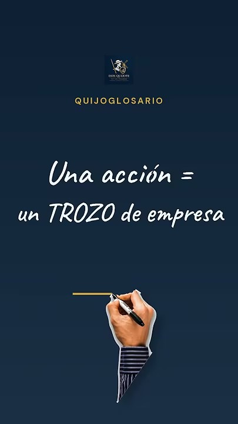

Cómo funciona
- Las acciones de las empresas cotizadas se compran y venden en bolsa a través de un bróker; su precio sube y baja según cómo le va a la empresa y al mercado. Las de empresas no cotizadas no se negocian en bolsa.
- Puedes ganar de dos formas: vendiendo la acción más cara de lo que la compraste y, si la empresa decide repartir, cobrando dividendos. Ninguna de las dos está garantizada.
- No hay rentabilidad conocida ni garantizada: si a la empresa le va mal, el precio cae y puedes perder todo el dinero invertido. En caso de liquidación, el accionista es el último en cobrar.
Ejemplo ilustrativo
Imagina que el mercado valora una empresa en 1.000.000 € y su capital está dividido en 100.000 acciones: cada acción cotiza en torno a 10 €. Si compras 100 acciones inviertes 1.000 € y eres dueño del 0,1 % de la empresa.
Si más adelante el mercado la valora en 1.200.000 €, cada acción vale unos 12 € y tus 100 acciones, 1.200 €. Si la valora en 800.000 €, valen unos 800 €. El precio lo fija la valoración del mercado, no la empresa.
Cifras inventadas para explicar el concepto; no son una oferta ni una previsión.
Te lo explico en vídeo

▶Calcúlalo con tus números
Preguntas frecuentes
¿Cómo se gana dinero con una acción?
De dos formas: vendiendo la acción más cara de lo que la compraste y, si la empresa decide repartir, cobrando dividendos. Ninguna de las dos está garantizada.
¿Qué riesgo tiene invertir en acciones?
La rentabilidad no está garantizada: el precio sube y baja con la empresa y el mercado. Puedes perder parte o todo lo invertido; en caso de liquidación de la empresa, el accionista cobra el último.
Términos relacionados
Fuentes oficiales: CNMV, advertencias sobre renta variable · Finanzas para todos (Banco de España y CNMV), glosario.
Contenido educativo y general. No es asesoramiento financiero ni fiscal personalizado. Revisado el .